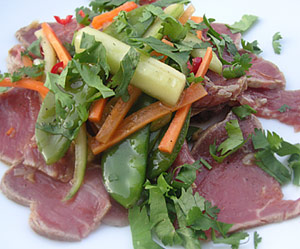

Rindsfilet Sashimi
5 von 6Für 2 Personen 200 g Rindsfilet am Stück auf allen Seiten max. 15 Sekunden anbraten, auskühlen lassen. Mit Glassichtfolie verschliessen und ca. 1 Stunde im Tiefkühler anhärten lassen (lässt sich später viel besser hauchdünn schneiden). Eine Karotte, eine halbe Gurke, einige Kefen, eine Chillischote, eine Frühlingszwiebel und ein Stück (ca. 3 cm) frischer Ingwer in feine Streifen schneiden und in eine Schüssel geben. Mit einem El Sojasauce und 2 El Olivenöl, Salz und Pfeffer marinieren. Auf dem Teller das so fein wie möglich geschnittene Rindsfilet verteilen und das Gemüse und dessen Saft darüber geben. Nach belieben mit frischem Koriander bestreuen.
